비비 vivi
긴 머리·앞머리, 뾰족귀의 미세 움직임, 양쪽 날개 관절. 뿔은 머리에 고정합니다.
본체 · 코 없음 · 머리카락과 인체 연결
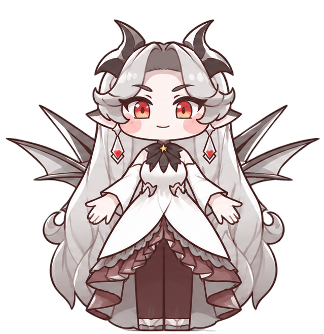
머리카락은 두피에, 날개는 등에 연결하고 각 윤곽이 읽히는지 확인하세요. 수은 칼날은 별도 파일입니다.
수은 칼날
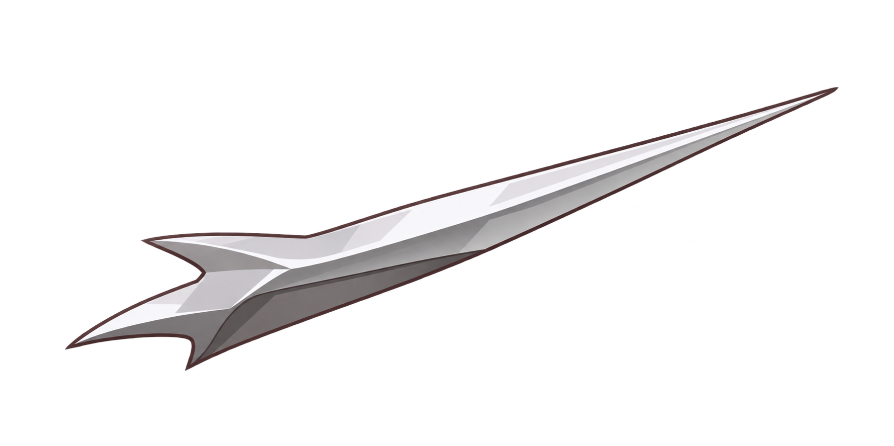
공격 모션 Attack1_1 23/57에서 수은 칼날 확인. 단일 날의 뒤쪽·두께는 제작용 해석.
나이아 naia
양쪽 땋은 머리와 앞머리. 모자와 꽃은 머리에 고정하고 머리카락 관통을 확인합니다.
본체 · 코 없음 · 머리카락과 인체 연결
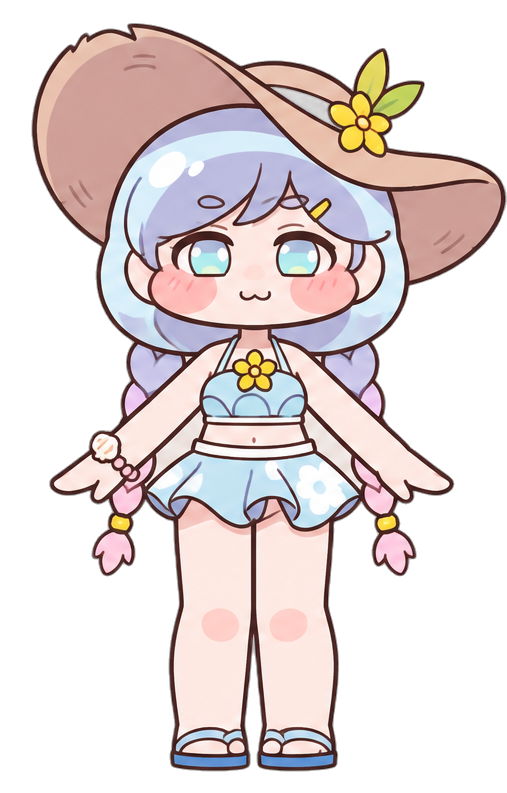
본체는 빈손으로 생성하고 돌고래 물총을 별도 생성해 연결합니다. 물줄기 효과는 선택 입력입니다.
돌고래 물총
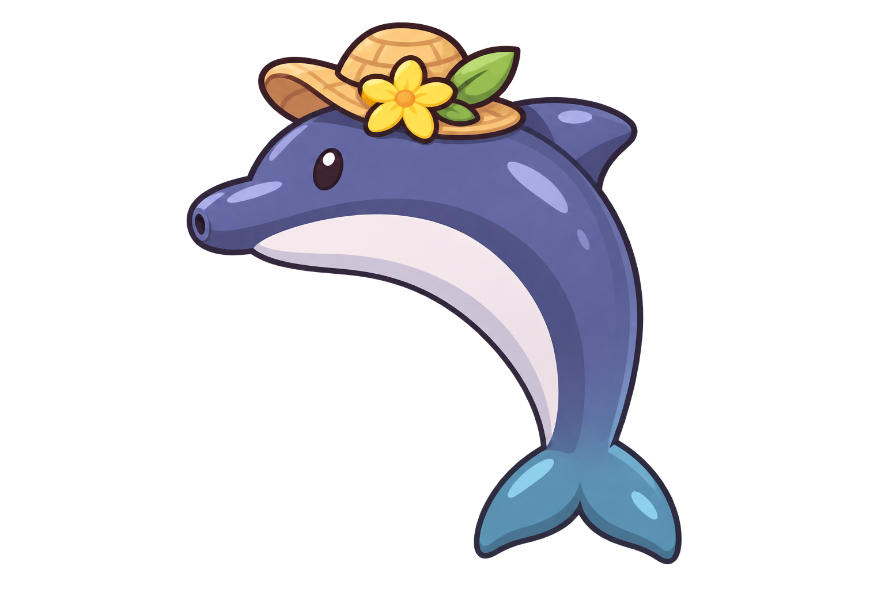
공식 카드의 작은 꽃 밀짚모자를 포함한 외형 기준. 작은 모자는 분리 액세서리로 요청. 등쪽 두께·노즐 구멍은 3D 제작용 해석.
물줄기 효과 · 선택
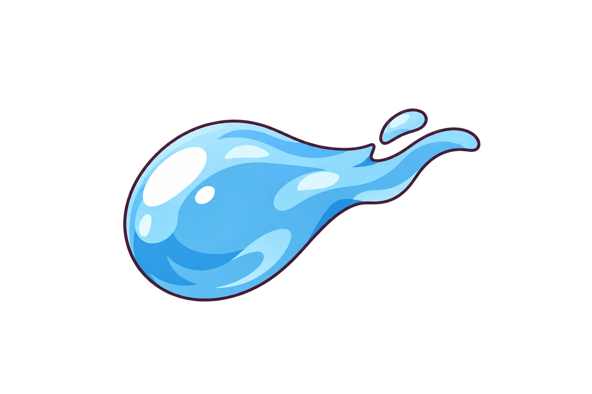
돌고래 물총의 주둥이 노즐에서 나오는 물줄기용 형태입니다. 물총 본체와 별도이며 최종 입자·투명도·흐름은 엔진에서 제작합니다.
에르핀 erpin
긴 머리·앞쪽 땋은 머리·작은 날개·망토, 뾰족귀 미세 움직임. 왕관은 고정합니다.
본체 · 코 없음 · 머리카락과 인체 연결
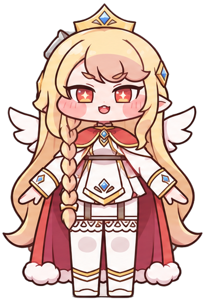
왕관·날개·붉은 망토를 유지합니다. 지팡이는 별도 파일입니다.
이드 id
풍성한 긴 머리는 여러 덩어리로, 긴 뾰족귀는 작은 각도로 움직입니다. 졸린 표정은 눈 감기/가늘게 뜨기 모프로 만듭니다.
본체 · 흰 눈썹·속눈썹 · 코 없음
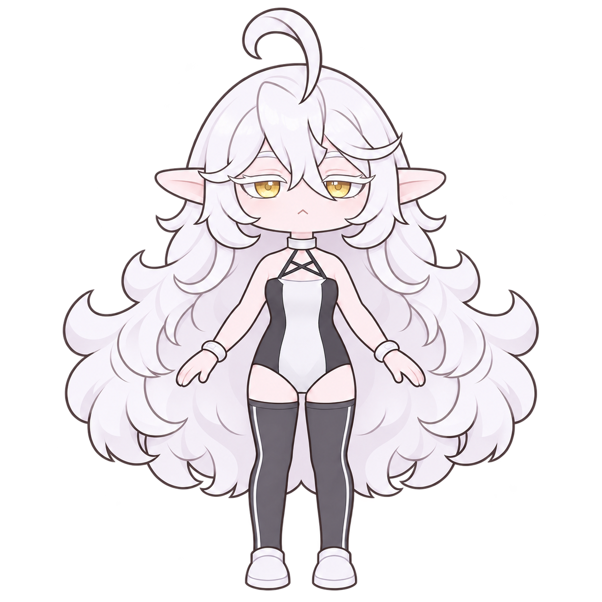
밝은 피부와 흰 머리·눈썹·속눈썹, 금색 반개안, 코 없는 얼굴을 유지합니다. 승인된 흰색·검은색 민소매 보디수트와 짙은 회색 스타킹을 보존합니다. 본체·초승달 탑승 장치·나타는 각각 입력합니다.
나타 · 초승달 로봇
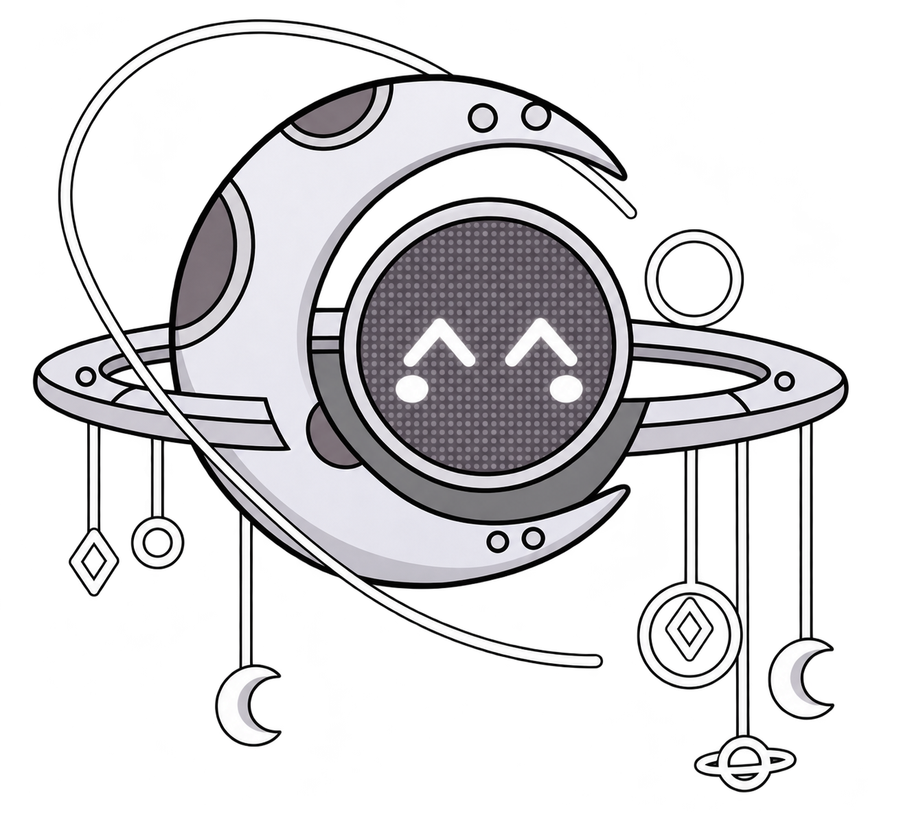
사용자 제공 나타 이미지 기준: 왼쪽에서 이어진 C자 흰 초승달 외장, 원형 화면, 수평 고리·긴 궤도선·천체 장식. 본체 및 탑승 장치와 별도 입력.
아야 aya
양쪽 나비 묶음 아래에서 발목까지 이어지는 머리를 좌우 6본 체인으로 분리합니다. 기모노·양산과 충돌을 확인합니다. 가려진 눈도 눈꺼풀을 만듭니다.
조립 참고 그림 — 분리 본체 입력용이 아닙니다.
본체 · 코 없음 · 머리카락과 인체 연결
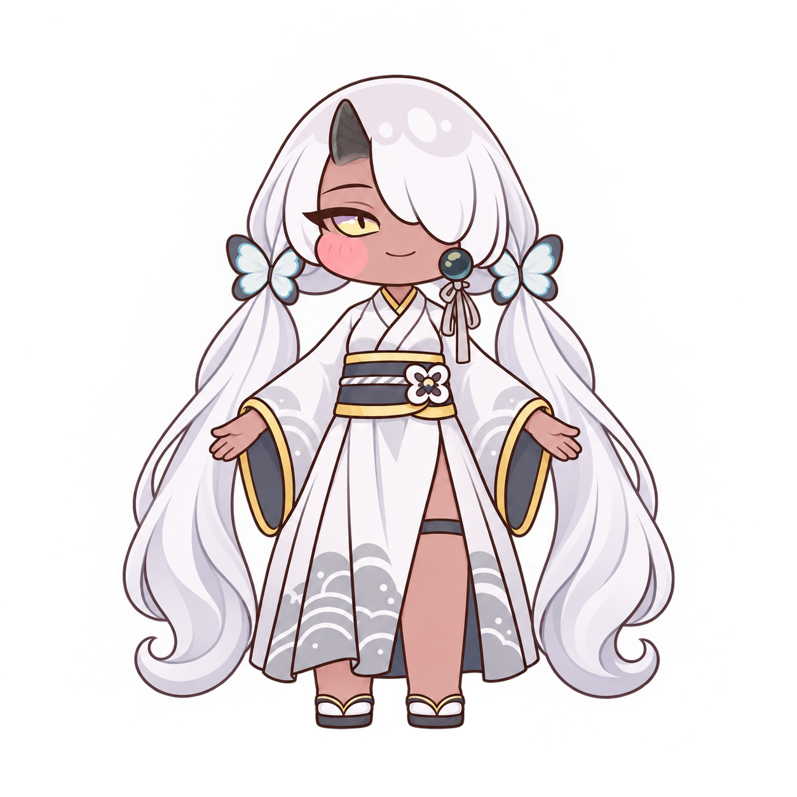
발목 길이 흰 양갈래를 유지한 빈손 본체와 꽃잎 양산을 분리했습니다. 양산을 든 기존 그림은 조립 참고용입니다.
피코라 picora
가방 착용 상태의 본체를 함께 생성합니다. 머리카락 뿌리와 어깨끈 부착을 유지하고, 가방·끈·체리 장식은 생성 후 보조 본과 가중치로 흔들림을 조정합니다. 별도 가방 모델을 추가 조립하지 않습니다.
본체 · 가방 착용 · 코 없음
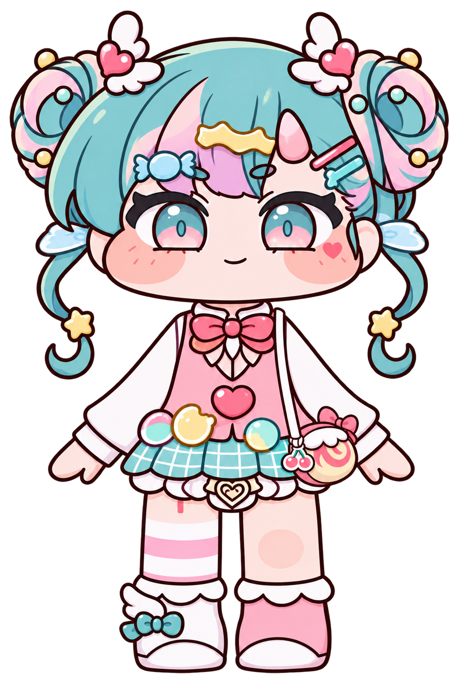
가방·흰 어깨끈·분홍 리본·체리 장식을 착용한 이 이미지를 본체 기본 입력으로 사용합니다. 피코라 입력은 가방 착용 본체와 별도 지팡이 두 가지입니다.
클로에 chloe
클로에는 자신의 머리카락·요정 귀·머리 리본·옷자락만 제어합니다. 세바스티안은 독립 리그이며 두 인형 팔은 곰의 어깨에 연결합니다. 기본 자세에서는 클로에가 뒤쪽 세바스티안의 양 볼을 손으로 받칩니다.
본체 · 코 없음 · 머리카락과 인체 연결
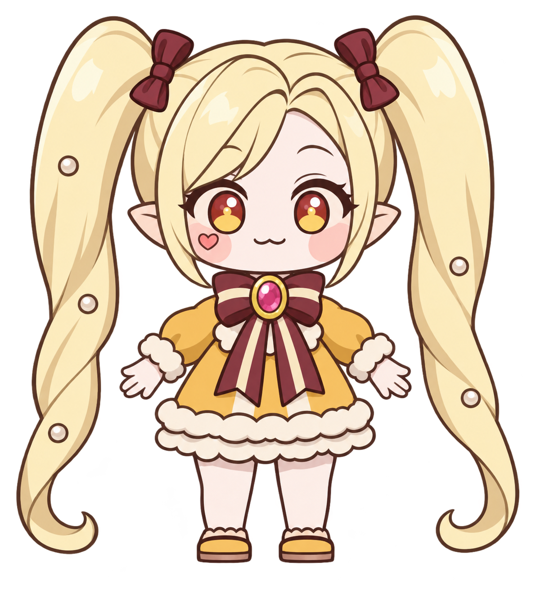
사용자 첨부 클로에 단독 그림 기준입니다. 곰 머리·인형 귀·인형 팔·보라 리본을 전부 제외했습니다. 세바스티안은 팔·다리가 포함된 별도 전신 입력입니다. 기본 조립 자세에서는 클로에가 양손으로 곰의 볼 아래를 받칩니다.
세바스티안 · 곰 인형 전신
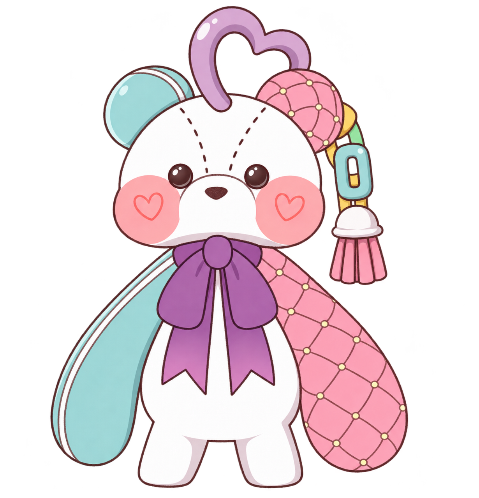
공식 소개 일러스트와 원작 Idle_SebastianForm 전신 대조. 양 볼 하트 선무늬·라벤더 하트형 바보털·민트/분홍 팔·보라 리본·옆 고리/술 장식을 반영하고 실사 봉제 질감과 노란 막대, 노출 금속 지퍼를 제거했습니다. 팬 제작 첨부는 구조 설명용 이력이며 외형·재질 기준이 아닙니다.
리뉴아 renua
짧은 머리와 코트 자락·술의 작은 움직임. 머리 양옆 관자 장식·귀 장식은 고정합니다. 뒤쪽 헤일로는 본체에서 제외합니다.
본체 · 코 없음 · 머리카락과 인체 연결
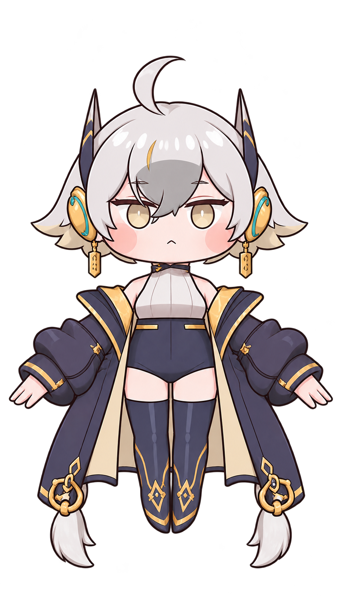
뒤쪽 원형 판·금색 헤일로를 제거한 본체입니다. 머리 양옆 장식과 의상은 유지하며 공격 마법진은 별도 입력입니다.
시계 모양 마법진
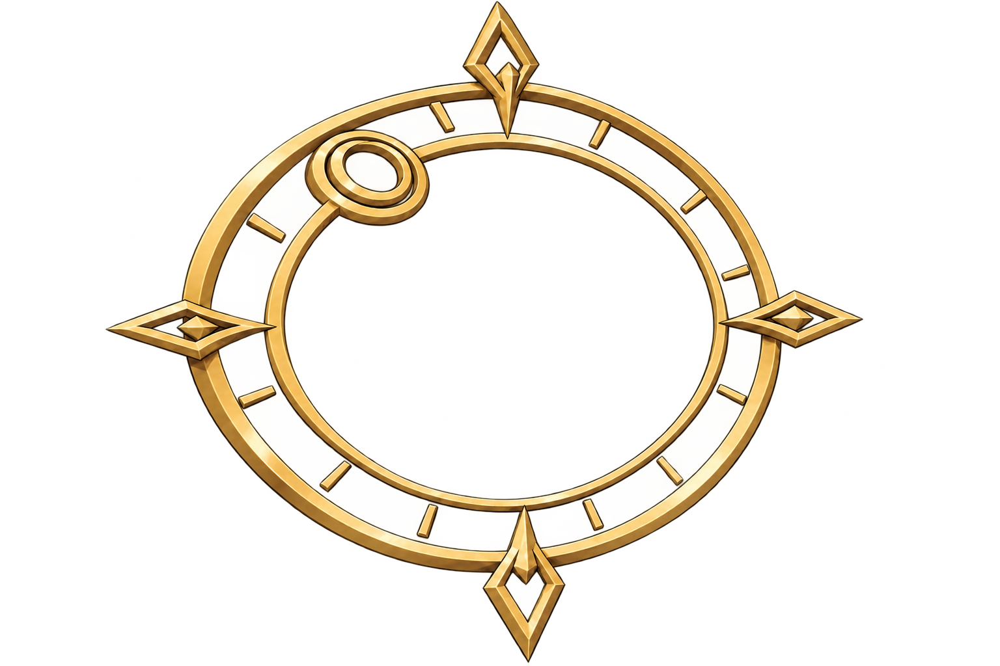
각성 리뉴아 Attack1_1 23/81의 금색 시계형 공격 마법진 확인. 3D 실물 장비가 아닌 효과용 해석.
마요 mayo
낮은 포니테일·앞머리·뾰족귀·작은 날개. 배낭은 몸통에, 모자는 머리에 고정합니다.
본체 · 코 없음 · 머리카락과 인체 연결
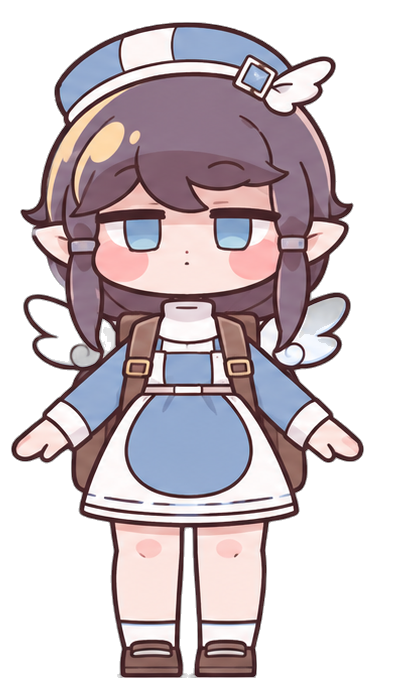
졸린 인상이지만 눈은 뜬 상태입니다. 배낭과 작은 요정 날개를 유지합니다.
벨라 bella
긴 머리·땋은 머리·유령 리본과 긴 치마를 별도 제어합니다. 치마의 원래 가림 범위는 유지합니다.
본체 · 코 없음 · 머리카락과 인체 연결
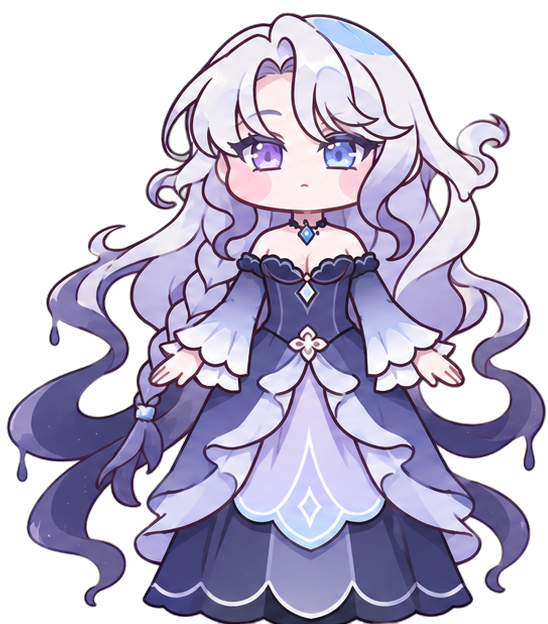
긴 치마를 유지합니다. 팔을 치마에서 떼고, 치마를 다리와 한 덩어리로 만들지 않도록 요청했습니다.
우이 ui
긴 땋은 머리와 앞머리·우비 자락. 모자 위 작은 개구리는 모자 장식이며 큰 탑승 개구리와 구분합니다.
조립 참고 그림 — 분리 본체 입력용이 아닙니다.
본체 · 코 없음 · 머리카락과 인체 연결
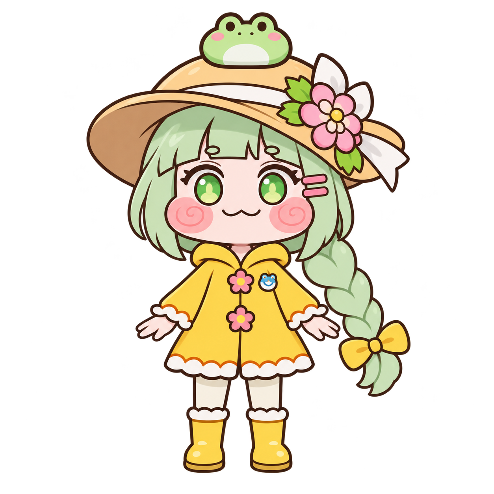
본체 A포즈를 새로 생성했습니다. 가려졌던 다리·장화는 제작용 해석입니다. 원래 큰 개구리 탑승형도 아래에 있습니다.
버터 butter
강아지 귀 좌우 3본, 꼬리 5본, 긴 머리 좌우 4본을 권장합니다. 귀·머리카락·꼬리는 각 뿌리 연결을 유지하면서 가중치를 구분하고 리본과 가방은 작은 보조 움직임만 줍니다.
본체 · 코 없음 · 머리카락과 인체 연결
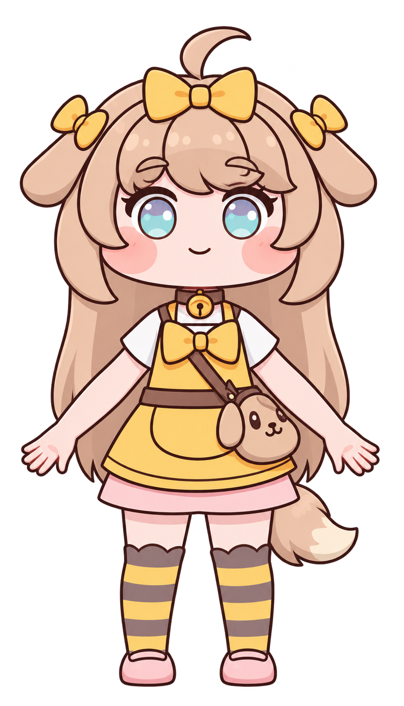
버터 재생성용: 눈을 뜨고 입을 편하게 다문 본체와 새총을 별도 입력합니다.
코미 komi
고양이 귀 좌우 2본, 가늘고 긴 꼬리 5본, 긴 머리 좌우 5본. 귀를 누이거나 꼬리를 휘는 동작을 별도로 제어합니다.
본체 · 코 없음 · 머리카락과 인체 연결
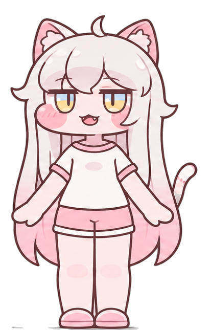
붙어 보이는 두 발은 살짝 벌리도록 요청했습니다. 베개는 별도 파일입니다.
힐데 hilde
높은 포니테일·앞머리·뾰족귀와 가운 자락. 안경은 머리에 고정하며 볼 모핑에 늘어나지 않게 합니다.
본체 · 코 없음 · 머리카락과 인체 연결
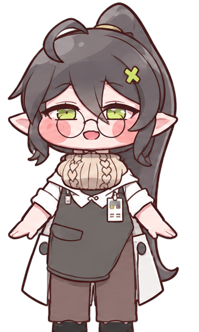
안경·명찰·니트·가운을 유지합니다. 의료 주사기총은 별도 파일입니다.
시온 shion
옆 포니테일·앞머리·리본·어깨 망토. 작은 가면은 머리 옆에 고정하고 눈을 덮지 않게 합니다.
본체 · 코 없음 · 머리카락과 인체 연결
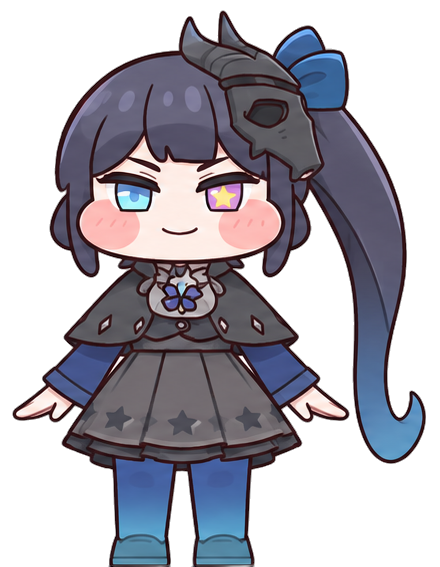
정면 이미지 기준 왼쪽 눈은 청록색, 오른쪽은 별 동공의 보라색입니다. 저격총은 별도 파일입니다.
원작 참고를 바탕으로 한 팬게임 제작용 해석입니다. 각 3D 작업의 결과와 리깅은 별도 검수가 필요합니다.